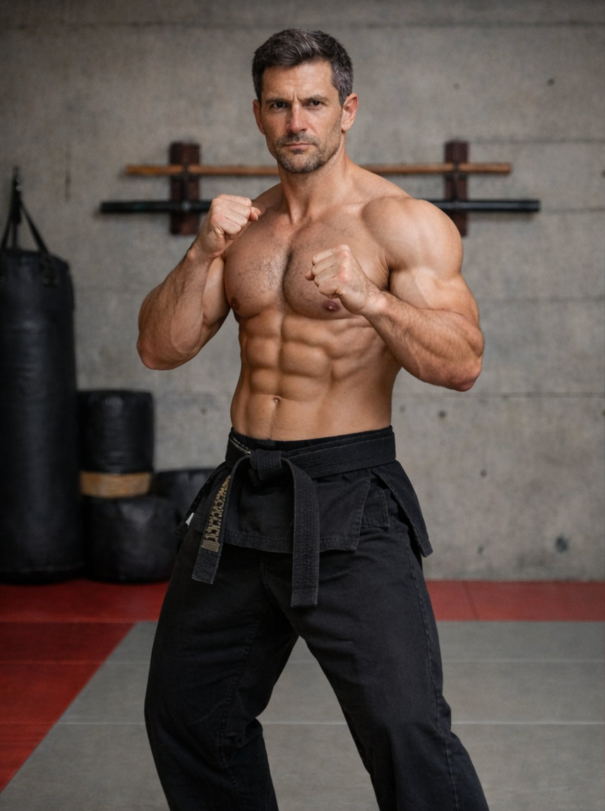

🏋️ 6 Zones Corporelles — Délais Réalistes

Oui. Corps sec, défini, bras développés sans volume excessif = résultat naturel des arts martiaux + muscu de renforcement. Corps de pratiquant, pas de culturiste.
⚡ Les 2 Facteurs Clés
Les abdos existent déjà — cachés sous la graisse. Descendre à 12–14% MG les révèle. Alimentation + cardio martial.
Le muscle se dessine en se renforçant. Tenir un carnet = clé de la progression. +1–2 kg toutes les 2–3 semaines sur chaque exercice.
📉 Masse Grasse — La Révélation des Abdos
Chemin vers 12% MG — Mars → Septembre 2026
Départ
Phase 1
Phase 1→2
Phase 2
HIIT
Phase 3
🎯 Objectif
📈 Progression de Charge — Le Carnet Vivant
Le muscle se dessine en se renforçant. La surcharge progressive est la loi fondamentale de la musculation. +1–2 kg toutes les 2–3 séances sur chaque exercice. Le carnet rend cette progression visible et incontestable.
Curl Biceps — Progression Bras Gauche (6 mois)
Phase 1
Excentrique
Phase 1→2
Phase 2
Construction
Phase 3
🎯 Plein puissance
⚠️ Bras Gauche — Cas Particulier
Reconstruction Biceps Gauche — Timeline 12 mois
Départ max
Phase 2
+Kali
🎯
Complet
🪞 Vision Septembre — Le Miroir du Guerrier
Ce n'est pas de la vanité — c'est une lecture objective de ta progression. Chaque critère mesurable, chaque barre remplie, chaque kilo ajouté est une preuve concrète de discipline. En septembre, ce miroir dira : tu as fait le travail.
Septembre 2026 — Premier Cours Kajukenbo
6 mois de travail silencieux. Corps transformé, tendon reconstruit, hanches libres, cardio de combat. Le premier cours ne sera pas une découverte — ce sera une reconnaissance. Tu connaîtras déjà ton corps.
« Train Strong to Remain Strong. » — Sijo Adriano Emperado ✝️